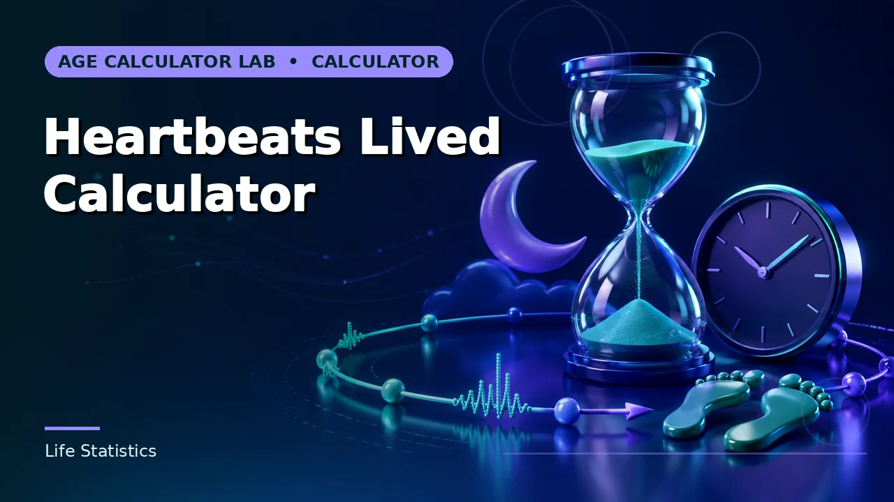
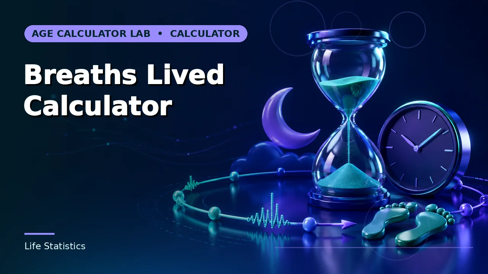
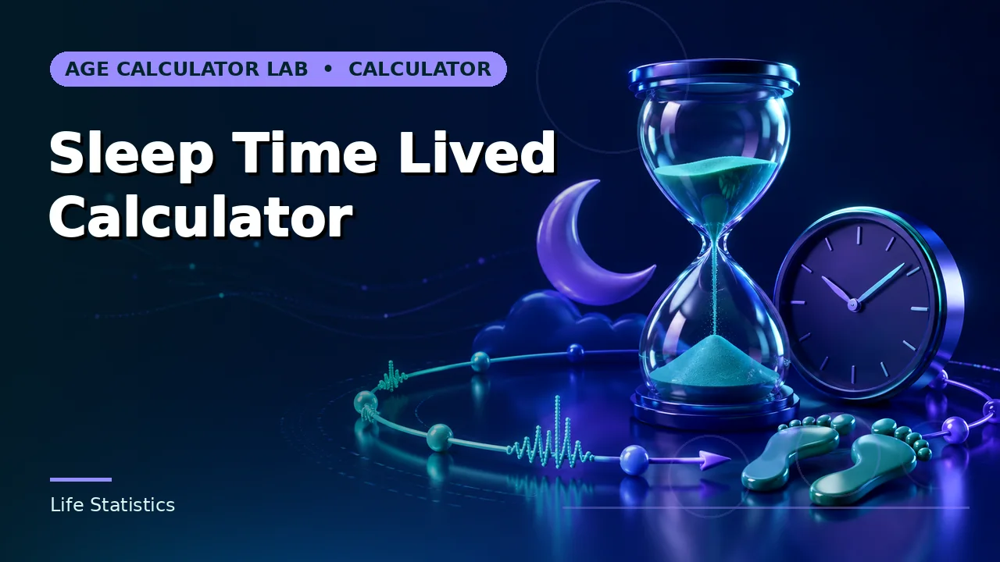
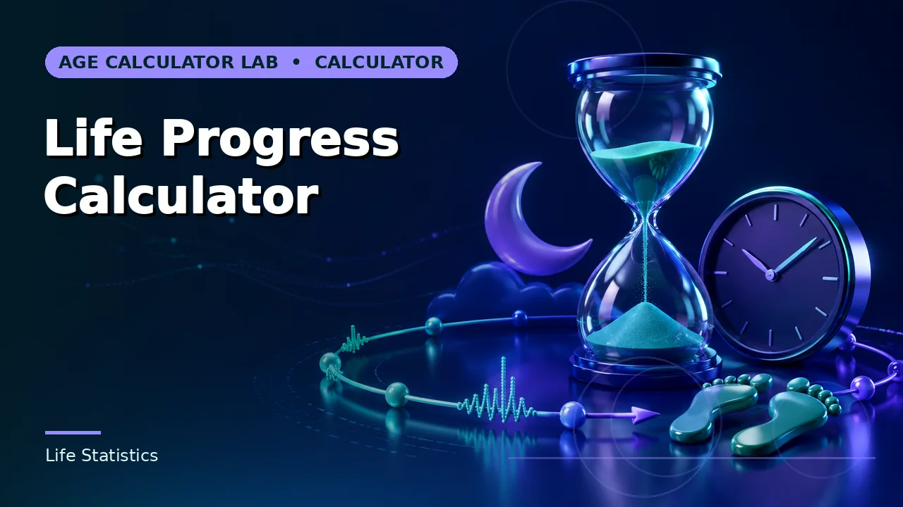
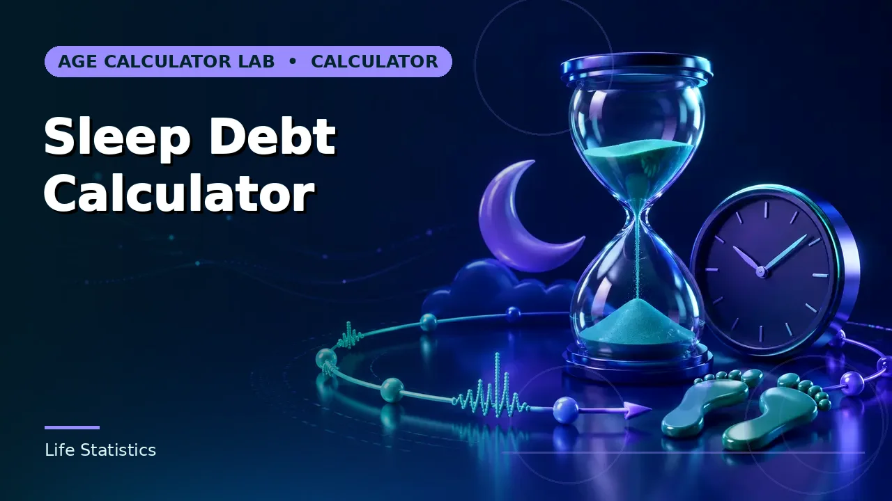
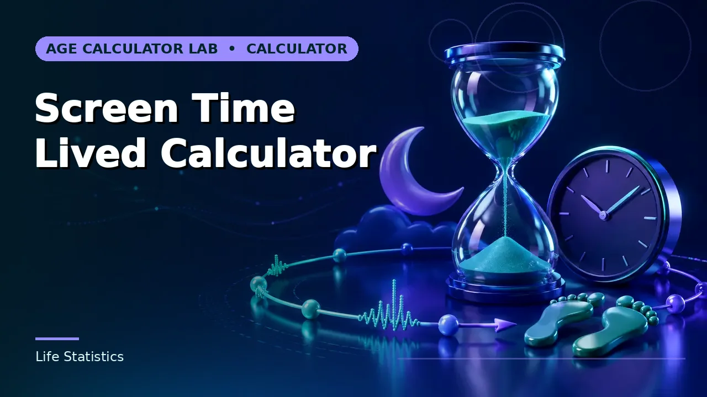

Life Statistics
Straight-line lifetime estimates for heartbeats, breaths, sleep and screen time.

Heartbeats Lived Calculator
Estimated lifetime heartbeats from age interval and average beats per minute.

Breaths Lived Calculator
Estimated lifetime breaths from age interval and average breaths per minute.

Sleep Time Lived Calculator
Estimated lifetime time spent sleeping from average hours per day.

Life Progress Calculator
The percentage of a user-selected lifespan target already elapsed.

Sleep Debt Calculator
Accumulated sleep shortfall over a chosen period against a nightly sleep target.

Screen Time Lived Calculator
An estimate of total time spent on screens across a lifetime at a stated daily average.
Guides for this category
Understand the conventions before the number goes into a record or a decision.
Browse the rest of the 161 calculators
Ten more groups covering assessments, pregnancy, work, dates and cultural references.